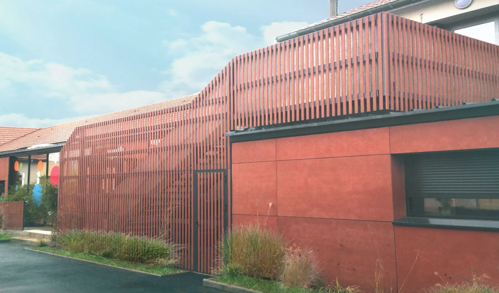

01
Habitat et logement
Maisons, petits immeubles, résidences intergénérationnelles : des logements généreux, ouverts sur un jardin ou une terrasse partagée.

grünboX-Vienne — le coworking
Architecte-ingénieur et urbaniste
La construction et l’entretien des bâtiments représentent environ 50 % des émissions de CO₂ en Europe. La longévité est notre premier levier : des bâtiments adaptables, qui évoluent avec leurs usages avec un minimum de travaux.
Nos projets ont été menés à Vienne, à Lyon et dans sa métropole, en Isère jusqu’au Vercors, en Drôme, en Haute-Savoie et jusque dans l’Indre : sept domaines, une même façon de faire.
Maisons, petits immeubles, résidences intergénérationnelles : des logements généreux, ouverts sur un jardin ou une terrasse partagée.

Usine textile, bâtiment communal, garage : révéler le potentiel caché de l’existant. Environ −65 % de carbone sur la grünboX-Vienne par rapport à du neuf.

Plateaux flexibles, mobilier modulaire, laboratoires : des espaces lumineux et végétalisés qui s’adaptent au travail.

Extension d’école en site occupé, dojo associé à des logements, tour radar préfabriquée montée par hélicoptère à 1 900 m.

Renouvellement urbain, friches en entrée de ville, ateliers et réunions publiques, dossier ÉcoQuartier en milieu rural.

Façades plantées, toits verts, cours, serres, champignonnière, aquaponie : le végétal pensé dès l’esquisse.

Les modèles Récipro-Cité et grünboX : des projets menés avec les habitants, qui peuvent réaliser eux-mêmes une partie des travaux.
Méthode
Une adaptabilité maximale avec un minimum de travaux : la longévité des bâtiments est notre premier levier contre les émissions de CO₂.
Des voisinages actifs où chacun est co-créateur de son environnement : jardins communautaires, coworking, ateliers communs, sans obligation.
Des solutions low-tech, simples et compréhensibles. Réemploi, eaux de pluie, matériaux naturels — et l’art de rendre les espaces plus généreux qu’ils ne le sont.
Des bâtiments devenus écosystèmes vivants : murs végétalisés, toits verts, jardins suspendus, cours plantées.
Missions
Le site actuel ne détaille pas les missions. Emplacement prévu pour les étapes d’accompagnement (faisabilité, esquisse, permis de construire, consultation des entreprises, suivi de chantier, autoconstruction), les types de clients, les conditions et la zone d’intervention précise.